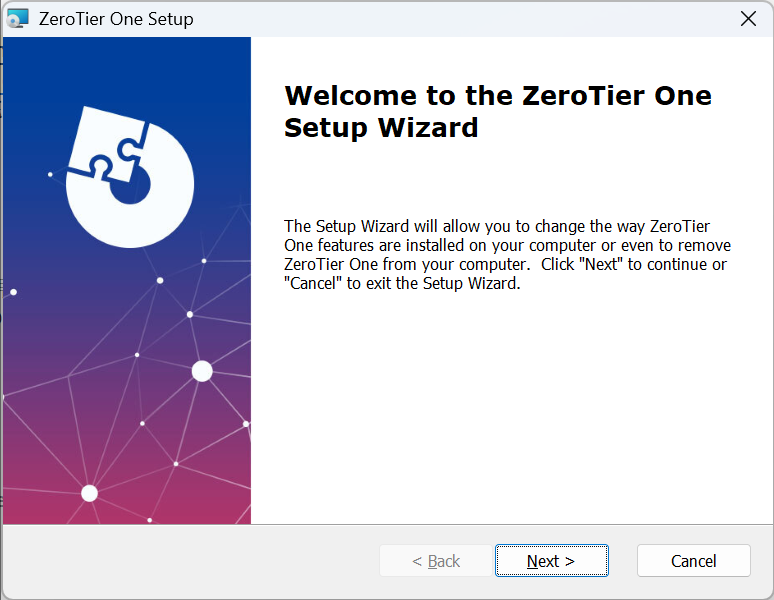
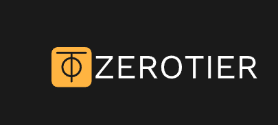
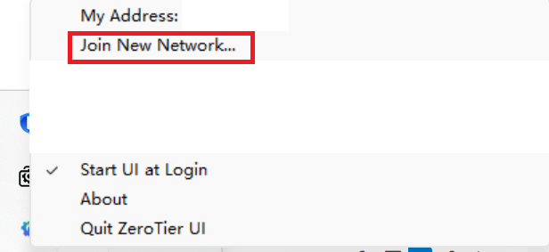
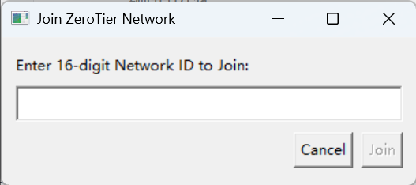
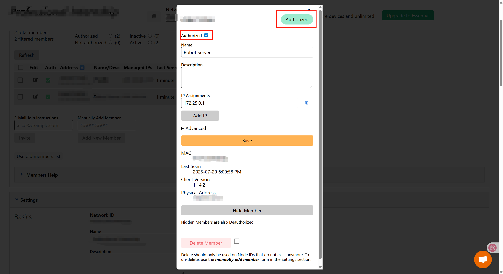

Windows 下使用 ZeroTier 加入好友网络教程
ZeroTier 是一款简单易用的虚拟局域网工具，支持多平台。本文介绍如何在 Windows 系统下下载安装 ZeroTier 并加入好友的虚拟网络。
1. 下载并安装 ZeroTier
- 访问官网下载页面：ZeroTier Windows 客户端下载
- 下载完成后，双击安装包，按提示完成安装。

2. 启动 ZeroTier 客户端
- 安装完成后，右下角任务栏点击“^”展开隐藏图标。
- 找到 ZeroTier 的图标（黄色圆圈），右键点击。


3. 加入好友网络
- 在弹出的菜单中选择
Join new network... - 输入好友提供的网络 ID（Network ID），点击“Join”。

4. 等待好友授权
- 加入后，需等待网络管理员（好友）在 ZeroTier 控制台授权你的设备。
- 授权后，你的设备会获得虚拟局域网内的 IP 地址。

5. 验证连接
- 在 ZeroTier 客户端中，查看网络状态是否为“OK”。
- 可通过
ipconfig命令查看分配到的虚拟网卡和 IP。 - 现在你可以与同一网络下的其他设备互通。
如需退出网络，可在 ZeroTier 客户端中右键对应网络，选择“Leave”。
本文仅为基础操作流程，更多高级用法可参考 ZeroTier 官方文档。
Windows 下使用 ZeroTier 加入好友网络教程
https://blog.yanjz.top/zerotier-usage/